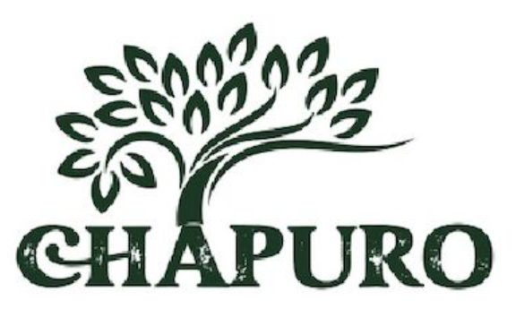

SD2022/0067358
MARCAMARCA – CHAPURO COFFEE
UN VIAJE AL CORAZÓN DEL HUILA CULTIVADO CON PASIÓN Y PROCESADO CON DEDICACIÓN, CAFÉ CHAPURO TE OFRECE EL AUTÉNTICO SABOR DE NUESTRA TIERRA
- Inventor
- José Lizardo Ninco
- Sector
- Agroindustria
- Redes sociales
- Abrir enlace ↗
- Contacto
- 📞 3162428891